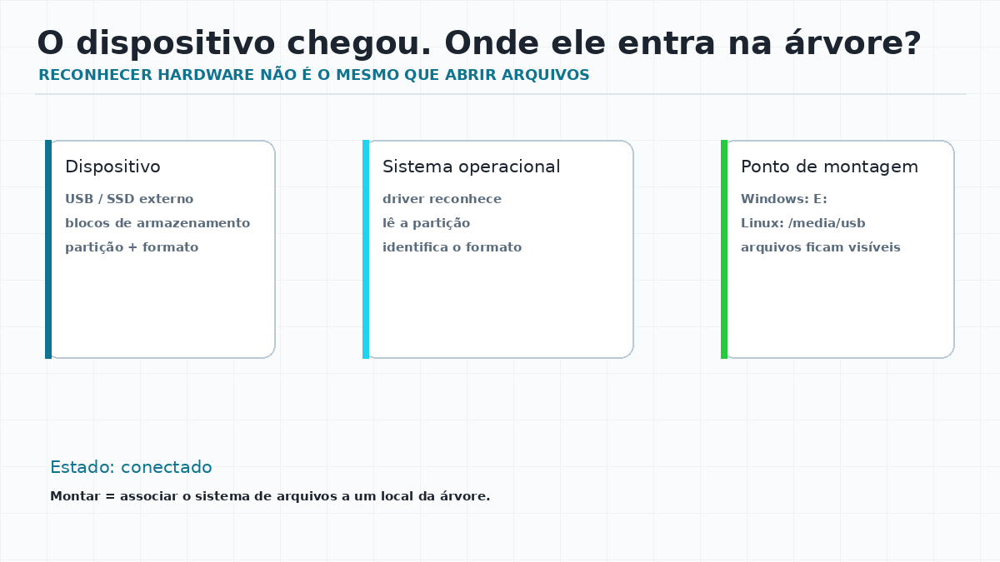
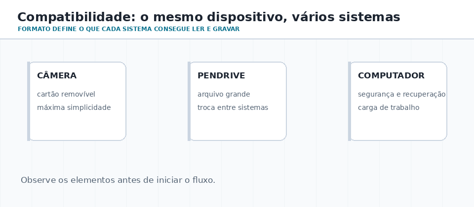
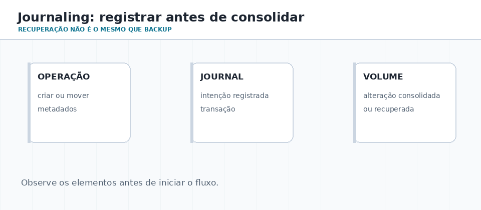
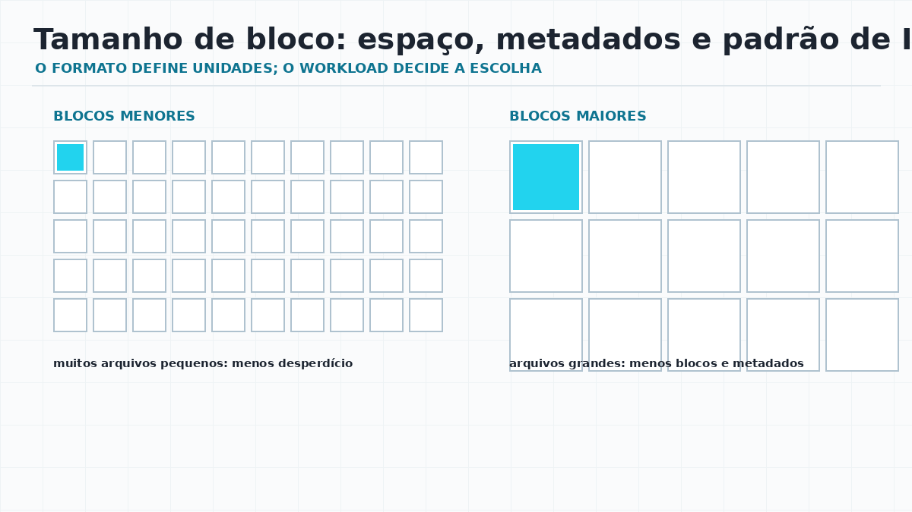

Foi reconhecido?
Verifique conexão e detecção do hardware.
AULA 06 · APROX. 70–85 MINUTOS
O melhor sistema de arquivos depende do dispositivo, do acesso necessário e do risco aceitável.
Depois da Aula 05, examine as condições de acesso, escolha e recuperação antes de avançar para a Aula 07.
01 · DO DISPOSITIVO AO ARQUIVO
Um SSD pode aparecer no sistema e ainda não estar disponível para navegação. Investigue as camadas antes de supor que a mídia está vazia.
Verifique conexão e detecção do hardware.
Investigue partições e volumes; alguns dispositivos também podem conter um sistema de arquivos diretamente.
Confira suporte ao formato, montagem e permissões antes de alterar qualquer dado.

02 · MONTAGEM
No Linux, um sistema de arquivos é associado a um diretório, como /media/aluno/usb. No Windows, um volume pode receber uma letra como E:\ ou ser associado a uma pasta NTFS vazia.
Montar associa o sistema de arquivos a um caminho de acesso; formatar cria um sistema de arquivos e pode destruir os dados existentes.
Get-Disk Get-Partition Get-Volume mountvol
lsblk -f findmnt df -T head /proc/mounts
As saídas variam entre versões e ambientes. Ausência de letra, suporte, montagem ou autorização pode impedir acesso; cada hipótese precisa ser verificada.
03 · FORMATOS E COMPATIBILIDADE
Compare os clientes, o tamanho dos arquivos, as permissões e as necessidades de recuperação.
| Formato | Uso inicial | Limite ou atenção |
|---|---|---|
| FAT32 | Firmware, câmeras e mídia legada | Arquivo individual até 4 GiB menos 1 byte; sem journaling nem ACL NTFS. |
| exFAT | Mídia removível compartilhada | Boa portabilidade; não fornece o mesmo conjunto de recursos de segurança e journal do NTFS. |
| NTFS | Windows corporativo e servidores | ACL, quotas e recursos de segurança; verificar suporte em outros sistemas. |
| ext4 / XFS | Linux e servidores | Recursos e semântica Linux; verificar acesso por outros sistemas. |
| APFS | macOS e SSD Apple | Snapshots e criptografia; verificar compatibilidade fora do ecossistema Apple. |
É um recurso de criptografia por arquivo ou diretório disponível em cenários NTFS.

04 · JOURNALING E RECUPERAÇÃO
Em sistemas com journaling, operações relevantes são registradas conforme as regras do sistema. Após uma falha, o processo de recuperação usa esse registro para restaurar a consistência; os dados protegidos dependem do sistema e de sua configuração.
Ajuda a recuperar a consistência após interrupções. Não garante a recuperação de todas as alterações recentes.
Permite recuperar uma versão anterior, inclusive após exclusão acidental, se essa versão estiver no backup.
O journal de recuperação do NTFS e o USN Change Journal são mecanismos distintos; o segundo registra mudanças para aplicações e indexação.

Planeje retenção, restauração e teste de recuperação.
05 · TAMANHO DE ALOCAÇÃO
Em um modelo simplificado, um arquivo de 1 KiB que ocupe uma unidade de alocação de 64 KiB deixa 63 KiB sem uso nessa unidade. Sistemas reais podem ter mecanismos que alteram esse exemplo.
Unidades menores podem reduzir desperdício com arquivos pequenos, mas aumentar o número de unidades e o custo de metadados. Unidades maiores podem favorecer algumas cargas sequenciais e desperdiçar mais espaço; o resultado depende do sistema, dispositivo e padrão de acesso. Páginas de banco de dados e blocos do sistema de arquivos são conceitos distintos.

06 · LABORATÓRIO SEGURO
Um pendrive aparece no Gerenciador de Discos, mas não abre no Explorador. Verifique a partição, o formato reconhecido, a letra ou ponto de montagem e as permissões. Documente as evidências; não conclua que a mídia está vazia.
07 · DESAFIO FINAL
Para cada cenário, indique formato inicial, risco ou limitação e evidência a coletar antes da implantação:
Considere suporte, carga de trabalho, permissões, recuperação e políticas da organização; a escolha final depende do ambiente real.
Material adicional: dados, montagem e integridade. Referências: Microsoft: comparação de sistemas de arquivos; Linux: journal do ext4; Apple: integridade no APFS.